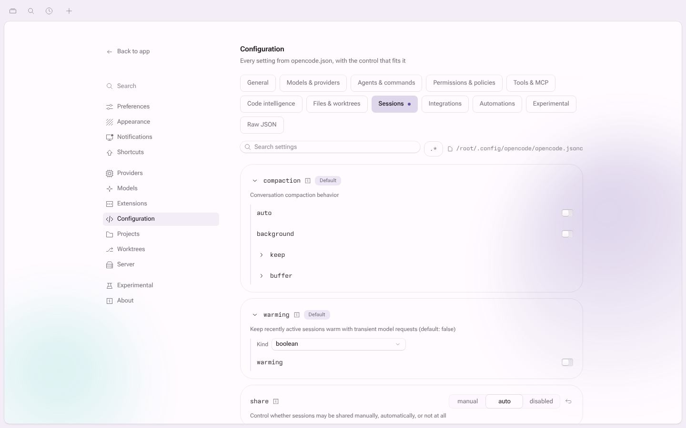

Configuration studio
Opening the studio
Open Settings › Configuration. Every key of opencode.json is listed by category. The info icon next to a key shows its description, and a badge shows whether a project or another global file also sets it.
Search matches names and descriptions. The .* button turns on regular expressions.
Controls for every key
Each key gets the control that fits its type:
- Switches for on/off values.
- Segmented buttons for short choices.
- Sliders with a number field for bounded numbers.
- Chip lists for lists of text.
- Cards for named entries such as agents, commands and MCP servers.
- A kind picker for values that take several shapes.
- A JSON editor for anything else, which only applies valid JSON.

Review and save
Review and save asks the server for a dry run and shows the exact change to your global configuration file. Comments and unrelated content are kept. Invalid changes are shown with the reason and cannot be saved.

Raw JSON
Raw JSON edits the whole document at once and turns each changed key into a pending change you review the same way.
The studio has a regular-expression toggle on its search; an anchored regex builder is not part of it yet.